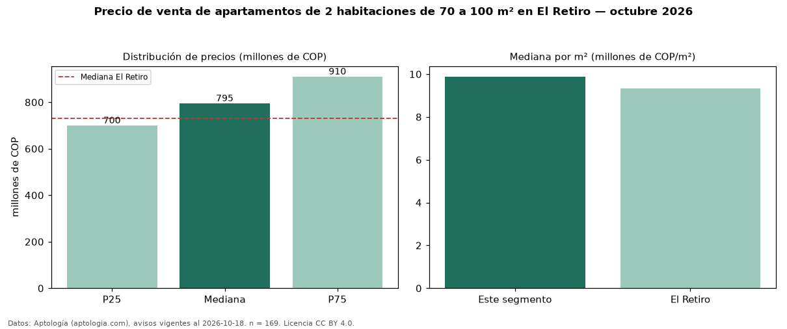

Precio de venta de apartamentos de 2 habitaciones de 70 a 100 m² en El Retiro — octubre 2026
En El Retiro, la mediana de precio de venta de apartamentos de 2 habitaciones de 70 a 100 m² es COP 795 millones, según 169 avisos vigentes. Eso es 6 % más que la mediana de los apartamentos de 2 habitaciones en venta de El Retiro (COP 750 millones, n = 373); este segmento reúne el 45 % de esos avisos. Por metro cuadrado, la mediana es COP 9,88 millones/m² (n = 169), 5 % por encima de los apartamentos de 2 habitaciones en venta de El Retiro (COP 9,40 millones/m²). El área mediana anunciada es 84 m². La administración mediana declarada es COP 441.418 al mes (n = 86). El estrato más frecuente es 5 (73 % de los avisos con estrato). La mediana de todos los apartamentos en venta de El Retiro es COP 730 millones (+9 % de diferencia). La mitad central de los avisos va de COP 700 millones a COP 910 millones (razón 1,3), una dispersión baja. Datos: Aptología (aptologia.com), CC BY 4.0 — https://www.aptologia.com/venta/el-retiro. Archivos: PDF, CSV con las cifras y gráfica PNG.

| Avisos únicos | 169 |
|---|---|
| Percentil 25 | COP 700.000.000 |
| Mediana | COP 795.000.000 |
| Percentil 75 | COP 910.000.000 |
| Mediana por m² | COP 9.883.720 |
Fuente: avisos vigentes de portales inmobiliarios recopilados por Aptología, deduplicados (mínimo 30 avisos únicos por celda). Precios pedidos, no cerrados. Fecha: 2026-10-18.